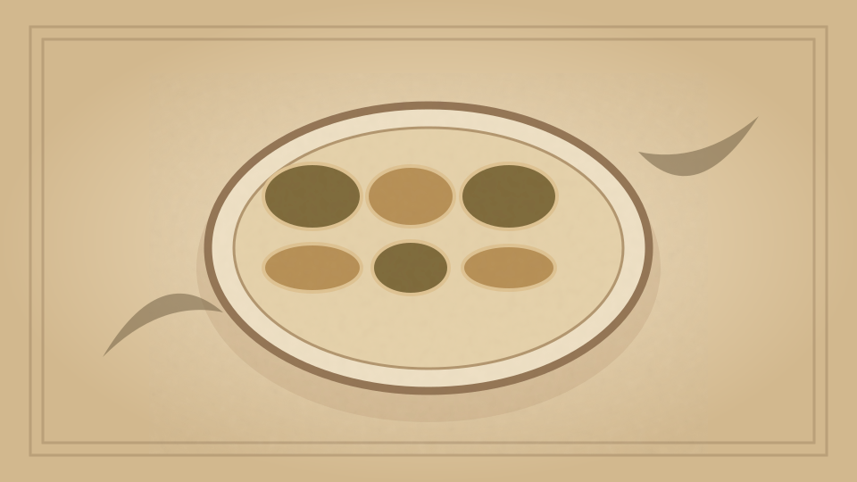

1910 · Fannie Merritt Farmer · FISH
II. Crustaceans
The Boston Cooking-School Cook Book

Historical Recipe
The following text is extracted from the 1910 edition, retaining historical terminology and quantities.
Original Ingredients & Directions
Lobsters belong to the highest order of Crustaceans, live exclusively in sea-water, generally near rocky coasts, and are caught in pots set on gravelly bottoms. The largest and best species are found in Atlantic waters from Maine to New Jersey, being most abundant on Maine and Massachusetts coasts. Lobsters have been found weighing from sixteen to twenty-five pounds, but such have been exterminated from our coast. The average weight is two pounds, and the length from ten to fifteen inches. Lobsters are largest and most abundant from June to September, but are obtainable all the year. When taken from the water, shells are of mottled dark green color, except 157 when found on sandy bottoms, when they are quite red. Lobsters are generally boiled, causing the shell to turn red.
A lobster consists of body, tail, two large claws, and four pairs of small claws. On lower side of body, in front of large claws, are various small organs which surround the mouth, and a long and short pair of feelers. Under the tail are found several pairs of appendages. In the female lobster, also called hen lobster, is found, during the breeding season, the spawn, known as coral . Sex is determined by the pair of appendages in the tail which lie nearest the body; in the female they are soft and pliable, in the male hard and stiff. At one time small lobsters were taken in such quantities that it was feared, if the practice was long continued, they would be exterminated. To protect the continuance of lobster fisheries, a law has been passed in many States prohibiting their sale unless at least ten inches long.
Lobsters shed their shells at irregular intervals, when old ones are outgrown. The new ones begin to form and take on distinctive characteristics before the old ones are discarded. New shells after twenty-four hours’ exposure to the water are quite hard.
Lobsters, being coarse feeders (taking almost any animal substance attainable), are difficult of digestion, and with some create great gastric disturbance; notwithstanding, they are seldom found diseased.
To Select a Lobster. Take in the hand, and if heavy in proportion to its size, the lobster is fresh. Straighten the tail, and if it springs into place the lobster was alive (as it should have been) when put into the pot for boiling. There is greater shrinkage in lobsters than in any other fish.
To Open Lobsters. Take off large claws, small claws, and separate tail from body. Tail meat may sometimes be drawn out whole with a fork; more often it is necessary to cut the thin shell portion (using scissors or a can opener) in under part of the tail, then the tail meat may always be removed whole. Separate tail meat through centre, and remove the small intestinal vein which runs 158 its entire length; although generally darker than the meat, it is sometimes found of the same color. Hold body shell firmly in left hand, and with first two fingers and thumb of right hand draw out the body, leaving in shell the stomach (known as the lady ), which is not edible, and also some of the green part, the liver . The liver may be removed by shaking the shell. The sides of the body are covered with the lungs ; these are always discarded. Break body through the middle and separate body bones, picking out meat that lies between them, which is some of the sweetest and tenderest to be found. Separate large claws at joints. If shells are thin, with a knife cut off a strip down the sharp edge, so that shell may be broken apart and meat removed whole. Where shell is thick, it must be broken with a mallet or hammer. Small claws are used for garnishing. The shell of body, tail, and lower part of large claws, if not broken, may be washed, dried, and used for serving of lobster meat after it has been prepared. The portions of lobsters which are not edible are lungs , stomach (lady), and intestinal vein .
Automatically extracted transcription; editorial verification pending. Historical instructions may not meet modern food-safety standards.